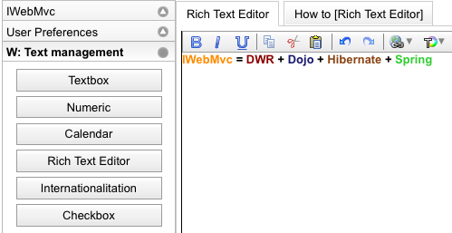

IWebMvc glues together DWR, Dojo, Spring and Hibernate/JPA.
Despite the name, it's not really another Web MVC framework, but more along the lines of AppFuse or Grails, as a way to kick-start a project and provide some sensible defaults without needing to learn everything from scratch.
IWebMvc is:
JAWR is a packaging and compressing library for serving JavaScript and CSS. It includes DWR integration to help reducing the footprint of DWR script files. Jawr is an Open Source library that helps achieve two main goals for rich java web applications.
First, it's a productivity tool, since it allows heavy modularization in JavaScript code. Instead of having big all-in-one scripts, users can develop their components in separate files, which makes development, maintenance and version control a lot easier.
On the other hand, it is a performance tool for serving pages fast. When its production mode is active, all the modules are concatenated, minified and compressed automatically into one or several files (as per configuration). Thus, the number of HTTP requests and their size is reduced, improving dramatically page loading times.
When you use DWR with Jawr, you can have all the static scripts joined together, plus you can have them in turn joined with your own scripts or libraries (such as Dojo). Also, dynamically generated javascript stubs for your DWR beans can also be joined in any way you find convenient. Finally, all these scripts will be minified and gzipped, so in the end users will have to download a lot less bytes.
JSON-RPC-Java does a similar job to DWR. The main difference between JSON-RPC-Java and DWR is that JSON focuses on a standardized wire protocol so you can re-write your back end server and leave the browser as it is. DWR focuses on making remoting easy for both ends of the spectrum, Java and JavaScript.